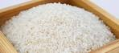
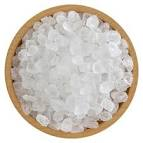

5 foods that are spiritual.

Food has been part of our lives since the beginning of life.
but not only our physical bodies need food,even our spiritual
beings mostly for healing.That's why we bring you 5 spiritual
food you consume every day
1 Rice

Over the past centuries rice has been used among different
religions and beliefs.It's main use is to invoke marine spirits
2 Milk
Ever felt cursed or someone has put a bad spell on you,
then you might consider having to bathe with fresh milk
it is good for cleansing.
3 Sea salt

if you ever leave in a haunted house or feel the presents
of evil spirits.Then you should find sea salt and sprinkle it.
It really helps.
4 Chilli
chilli is also good for chasing away spirits.Just burn it,and
the smoke will handle the rest
5 Eggs
eggs are very spiritual,but we won't go into details as
they are mainly used for bewitching and black magic
Related stories

5 signs you might have a
marine spirit
after the devil was
banished from haven
he had to sought
for home

the final truth about idol
worship
Mat 4:9 "All this I
will give you," he
said, "if you
will bow down and
worship me."

the truth about the dead
Ever wondered were thespirits of the dead ?
|
Home Page Feedback Advertise +263 712 098 125 |